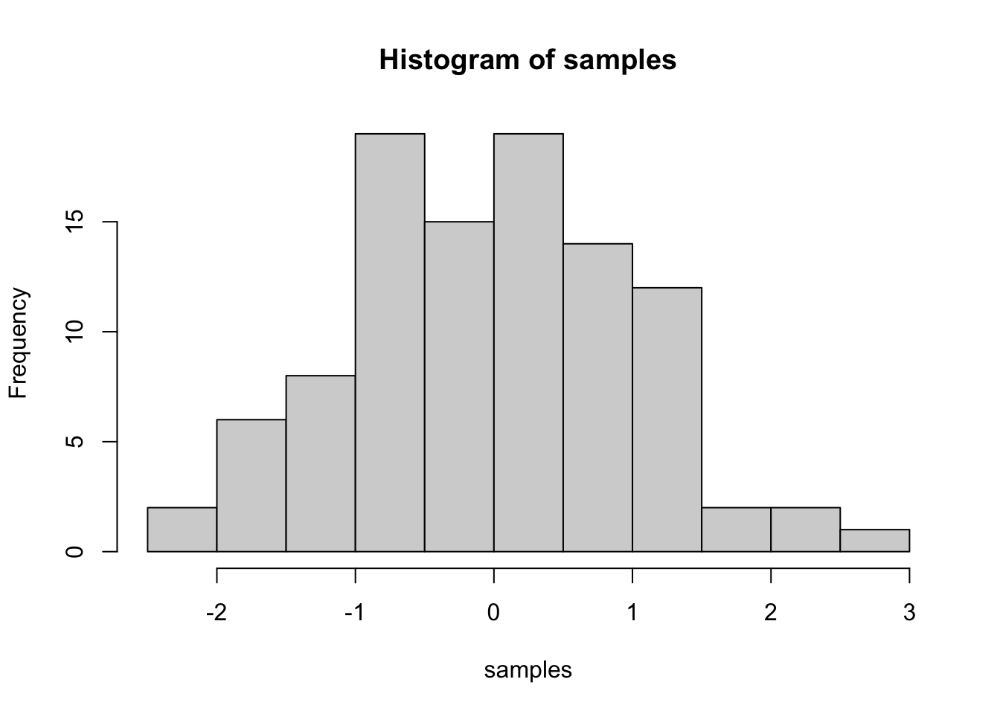
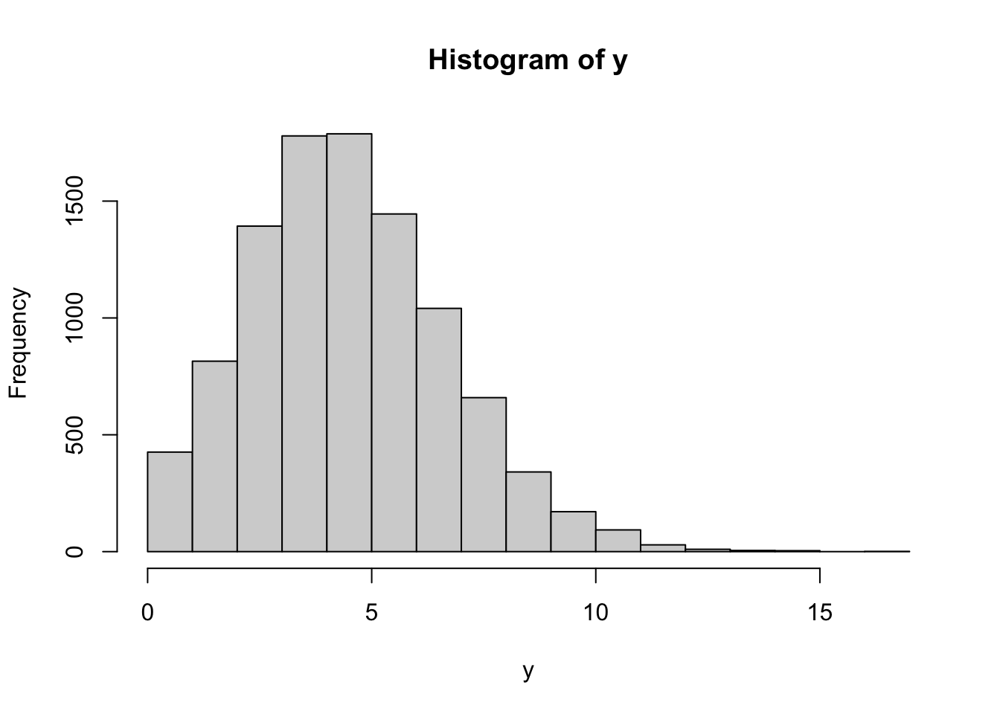
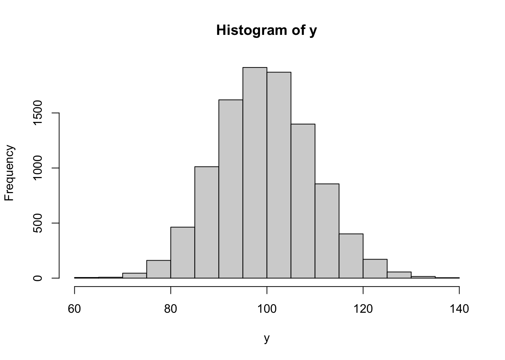
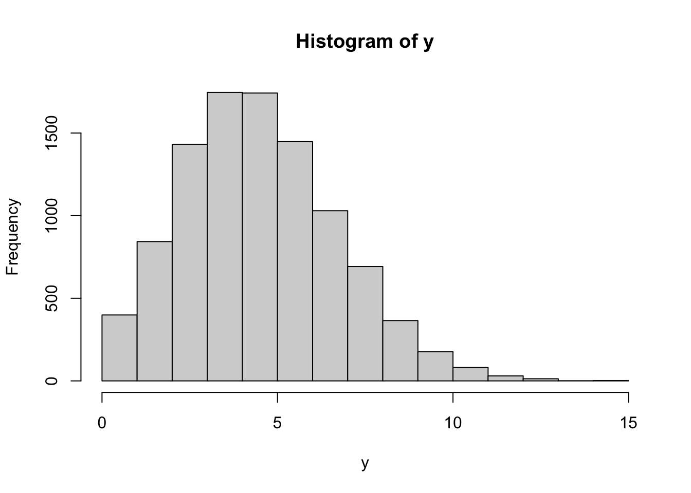
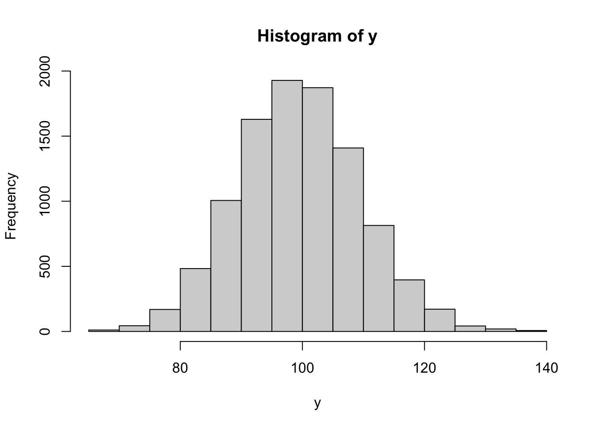

I am passionate to explore more with R! (more to come)
I’ll first load some packages so I can use all the functions later
library(here)
library(multilevel)
library(lme4)
library(tidyverse)
library(metafor)
library(readxl)
library(tidyverse)
library(MASS)
library(ggplot2)
library(SimMultiCorrData)
library(rlist)
library(haven)
library(writexl)
library(rstatix)
library(purrr)
library(broom)
library(faux)
library(multcomp)
library(jtools) # for summ()
library(mvtnorm) # References rmvnorm()
library(ellipse) # References ellipse()2021 | 3 | 7 Last compiled: 2021-12-19
I am learning how to simulate data in R. Say I want to sample 100 numbers from a normal distribution with mean = 0, and standard deviation =1, and then plot a histogram.
samples <- rnorm(100, mean=0, sd=1)
hist(samples)
Let’s try some basic distributions (reference: https://aosmith.rbind.io)
#Generating random numbers
#Using vectors of values for the parameter arguments
rnorm(n = 10, mean = c(0, 5, 20), sd = c(1, 5, 20))## [1] 0.6029337 10.4268528 70.0770101 -1.7427271 12.5175698 38.6879607
## [7] -1.3948903 7.3217429 10.0007294 -0.3245730 #Things are different for the n argument. If a vector is passed to n, the length of that vector is taken to be the number required (see Arguments section of documentation for details). Here’s an example. Since the vector for n is length 3, we only get 3 values.This has caught me before, as I would expect this code to give me different numbers per group instead of ignoring the information in the vector.
rnorm(n = c(1, 2, 3), mean = c(0, 5, 20), sd = c(1, 1, 1))## [1] -0.04367568 2.76384295 19.53040473#runif()
#pulls from the uniform distribution. The uniform distribution is a continuous distribution, with numbers uniformly distributed between some minimum and maximum.
runif(n = 5, min = 0, max = 1)## [1] 0.40988053 0.06414436 0.53739693 0.70213513 0.94970398#Discrete counts with rpois()
#An alternative to the Poisson distribution for discrete integers is the negative binomial distribution. Packages MASS has a function called rnegbin() for random number generation from the negative binomial distribution.
#generating discrete integers (including 0) from a Poisson distribution with rpois().
#The single parameter argument, lambda, is the mean. It has no default setting so must always be defined by the user.
rpois(n = 5, lambda = 2.5)## [1] 1 2 5 1 5y = rpois(10000, lambda = 5)
summary(y)## Min. 1st Qu. Median Mean 3rd Qu. Max.
## 0.000 3.000 5.000 4.988 6.000 17.000hist(y) #mild right-skew when we draw a histogram of the values.
y = rpois(10000, lambda = 100) #Poisson distribution with a mean of 100. The range of values is pretty narrow; there are no values even remotely close to 0, and distribution is now pretty symmetric.
summary(y)## Min. 1st Qu. Median Mean 3rd Qu. Max.
## 60.0 93.0 100.0 100.1 107.0 139.0hist(y) 
#Generate character vectors with rep()
rep(letters[1:2], each = 3) #each ## [1] "a" "a" "a" "b" "b" "b"rep(letters[1:2], times = 3) #The times argument can be used when we want to repeat the whole vector rather than repeating it element-wise.## [1] "a" "b" "a" "b" "a" "b"rep(letters[1:2], times = c(2, 4))## [1] "a" "a" "b" "b" "b" "b"rep(letters[1:2], each = 2, times = 3)## [1] "a" "a" "b" "b" "a" "a" "b" "b" "a" "a" "b" "b"rep(letters[1:2], each = 2, length.out = 7)## [1] "a" "a" "b" "b" "a" "a" "b"#1. Simulate data with no differences among two groups
group = rep(letters[1:2], each = 3)
factor = rep(LETTERS[3:5], times = 2)
response = rnorm(n = 6, mean = 0, sd = 1)
data.frame(group, factor, response )## group factor response
## 1 a C 0.2250695
## 2 a D -0.3906908
## 3 a E 1.4977746
## 4 b C -1.3932394
## 5 b D 0.1447946
## 6 b E 1.6680878#2. Simultae data with a difference among groups
group_two = rep(letters[1:2], times = 3) #or length.out = 6
response_two = rnorm(n = 6, mean = c(5, 10), sd = 1)
data.frame(group_two, response_two)## group_two response_two
## 1 a 5.755136
## 2 b 10.717885
## 3 a 4.781624
## 4 b 9.833268
## 5 a 4.220715
## 6 b 8.829955#3. Multiple quantitative variables with groups
m <- data.frame(group = rep(LETTERS[3:4], each = 10),
x = runif(n = 20, min = 10, max = 15),
y = runif(n = 20, min = 100, max = 150))
#4. Repeatedly simulate data with replicate() specifically made for the repeated evaluation of an expression (which will usually involve random number generation).
set.seed(16)
replicate(n = 3,
expr = rnorm(n = 5, mean = 0, sd = 1),
simplify = FALSE )## [[1]]
## [1] 0.4764134 -0.1253800 1.0962162 -1.4442290 1.1478293
##
## [[2]]
## [1] -0.46841204 -1.00595059 0.06356268 1.02497260 0.57314202
##
## [[3]]
## [1] 1.8471821 0.1119334 -0.7460373 1.6582137 0.7217206list = list()
for (i in 1:3) {
list[[i]] = rnorm(n = 5, mean = 0, sd = 1)
}
list## [[1]]
## [1] -1.6630805 0.5759095 0.4727601 -0.5427317 1.1276871
##
## [[2]]
## [1] -1.6477976 -0.3141739 -0.1826816 1.4704785 -0.8658988
##
## [[3]]
## [1] 1.5274670 1.0541781 1.0300710 0.8401609 0.2169647https://aosmith.rbind.io/2018/01/09/simulate-simulate-part1/
set.seed(16)
ngroup = 2
nrep = 10
b0 = 5
b1 = -2
sd = 2
(group = rep( c("group1", "group2"), each = nrep))## [1] "group1" "group1" "group1" "group1" "group1" "group1" "group1" "group1"
## [9] "group1" "group1" "group2" "group2" "group2" "group2" "group2" "group2"
## [17] "group2" "group2" "group2" "group2"(eps = rnorm(n = ngroup*nrep, mean = 0, sd = sd)) ## [1] 0.9528268 -0.2507600 2.1924324 -2.8884581 2.2956586 -0.9368241
## [7] -2.0119012 0.1271254 2.0499452 1.1462840 3.6943642 0.2238667
## [13] -1.4920746 3.3164273 1.4434411 -3.3261610 1.1518191 0.9455202
## [19] -1.0854633 2.2553741(growth = b0 + b1*(group == "group2") + eps)## [1] 5.952827 4.749240 7.192432 2.111542 7.295659 4.063176 2.988099
## [8] 5.127125 7.049945 6.146284 6.694364 3.223867 1.507925 6.316427
## [15] 4.443441 -0.326161 4.151819 3.945520 1.914537 5.255374dat = data.frame(group, growth)
growthfit = lm(growth ~ group, data = dat)
summary(growthfit)##
## Call:
## lm(formula = growth ~ group, data = dat)
##
## Residuals:
## Min 1Q Median 3Q Max
## -4.039 -1.353 0.336 1.603 2.982
##
## Coefficients:
## Estimate Std. Error t value Pr(>|t|)
## (Intercept) 5.2676 0.6351 8.294 1.46e-07 ***
## groupgroup2 -1.5549 0.8982 -1.731 0.101
## ---
## Signif. codes: 0 '***' 0.001 '**' 0.01 '*' 0.05 '.' 0.1 ' ' 1
##
## Residual standard error: 2.008 on 18 degrees of freedom
## Multiple R-squared: 0.1427, Adjusted R-squared: 0.0951
## F-statistic: 2.997 on 1 and 18 DF, p-value: 0.1005twogroup_fun = function(nrep = 10, b0 = 5, b1 = -2, sigma = 2) {
ngroup = 2
group = rep( c("group1", "group2"), each = nrep)
eps = rnorm(n = ngroup*nrep, mean = 0, sd = sigma)
growth = b0 + b1*(group == "group2") + eps
simdat = data.frame(group, growth)
growthfit = lm(growth ~ group, data = simdat)
growthfit
}
set.seed(16)
twogroup_fun()##
## Call:
## lm(formula = growth ~ group, data = simdat)
##
## Coefficients:
## (Intercept) groupgroup2
## 5.268 -1.555twogroup_fun(sigma = 1)##
## Call:
## lm(formula = growth ~ group, data = simdat)
##
## Coefficients:
## (Intercept) groupgroup2
## 5.313 -2.476#There is one special case: if there's a single unnamed input, the second level list will be dropped. In this case, rerun(n, x) behaves like replicate(n, x, simplify = FALSE).
sims = replicate(n = 1000, twogroup_fun(), simplify = FALSE )
reruns <- purrr::rerun(1000, twogroup_fun())
sims[[1]]##
## Call:
## lm(formula = growth ~ group, data = simdat)
##
## Coefficients:
## (Intercept) groupgroup2
## 5.290 -1.463reruns[[1]]##
## Call:
## lm(formula = growth ~ group, data = simdat)
##
## Coefficients:
## (Intercept) groupgroup2
## 5.027 -1.708tidy(growthfit)## # A tibble: 2 x 5
## term estimate std.error statistic p.value
## <chr> <dbl> <dbl> <dbl> <dbl>
## 1 (Intercept) 5.27 0.635 8.29 0.000000146
## 2 groupgroup2 -1.55 0.898 -1.73 0.101reruns %>%
map_df(tidy) %>%
dplyr::filter(term == "groupgroup2") %>%
ggplot2::ggplot(aes(x = estimate)) +
geom_density(fill = "blue", alpha = .5) +
geom_vline( xintercept = -2)
#Estimated standard deviation
#I can do a similar plot exploring estimates of the residual standard deviation. In this case I extract sigma from the model object and put it in a data.frame to plot the distribution with a density plot.
sims %>%
map_dbl(~summary(.x)$sigma) %>%
data.frame(sigma = .) %>%
ggplot( aes(x = sigma) ) +
geom_density(fill = "blue", alpha = .5) +
geom_vline(xintercept = 2)
#The estimated variation ranges between 1 to just over 3, and the distribution is roughly centered on the true value of 2. Like with the coefficient above, the model performs pretty well on average but any single model can have a biased estimate of the standard deviation.
#The standard deviation is underestimated a bit more than 50% of the time. This is not uncommon.
#Curly braces are used to evaluate a series of expressions (separated by new lines or semicolons) and return only the last expression: f <- function() {x <- 1; y <- 2; x + y}
sims %>%
map_dbl(~summary(.x)$sigma) %>%
{. < 2} %>%
mean()## [1] 0.539sims %>%
map_df(tidy) %>%
dplyr::filter(term == "groupgroup2") %>%
dplyr::pull(p.value) %>%
{. < 0.05} %>%
mean()## [1] 0.563